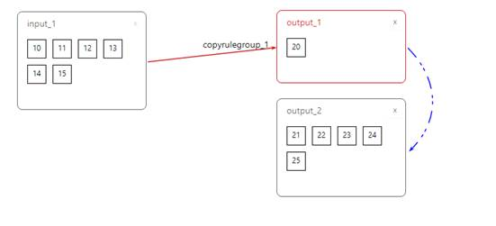

1. 进行流量镜像功能是依托在流量转发功能的基础上的
2. 比如想把10、11、12、13、14、15的流量复制一份给20、21、22、23、24、25口，操作如下：创建入接口组input_1，将10、11、12、13、14、15口添加到input_1中，接着创建普通出接口组output_1，将20口添加到output_1中，再创建复制出接口组output_2，将剩余的口（21、22、23、24、25）添加到output_2中，将input_1拖至output_1中，创建规则组copyrulegroup_1，接着将output_1拖至output_2中，如下图所示

3. 以上为基本的流量复制例子